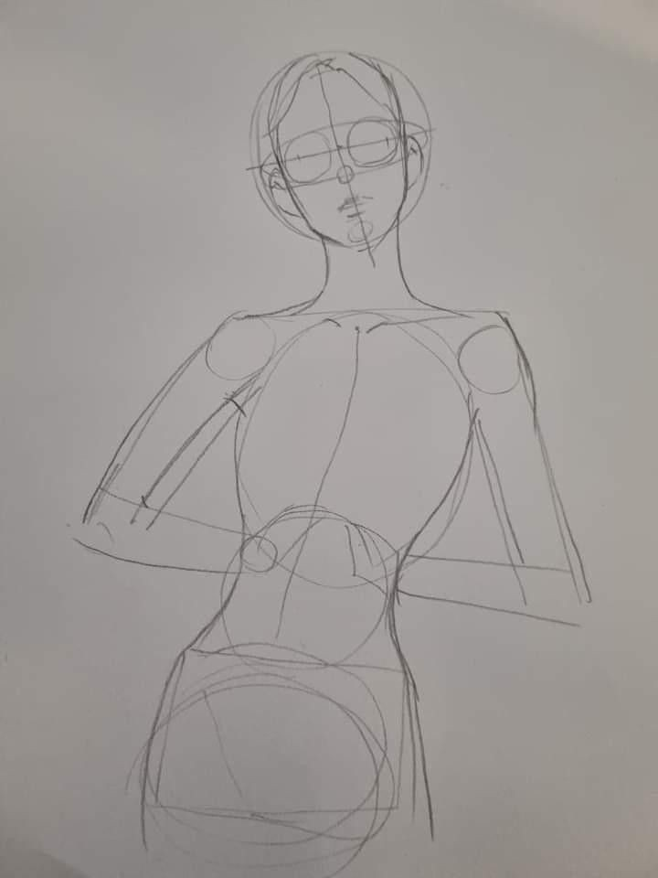

|  |
When drawing the human body, focus on these key aspects:
1. Proportions: Understand the basic proportions (e.g., the head is typically about 1/8th of the body height).
2. Anatomy: Study muscle groups, bone structure, and how they affect movement.
3. Pose and Gesture: Practice capturing dynamic poses and the overall gesture of the body to convey action.
4. Foreshortening: Learn how to depict objects or limbs that appear shorter due to perspective.
5. Silhouette: Understand the importance of creating a clear and interesting outline.
6. Volume and Form: Use basic shapes (cylinders, spheres) to construct the body and give it depth.
7. Movement and Weight: Study how weight distribution affects posture and balance.
8. Clothing and Fabric: Learn how different fabrics drape and fold on the body.
9. Facial Expressions: Consider how body language and facial expressions work together.
10. Reference: Use live models or photographs for accurate representation.
Regular practice and studying from observation will greatly enhance your skills!
|